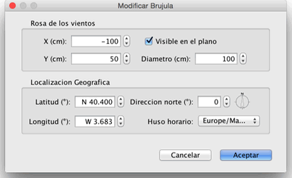

| Editando brújula y localización geográfica | |||
Cada casa nueva muestra una rosa de los vientos en la parte superior izquierda de su plano. Como otros elementos en el plano, puede ser movida con una operación de arrastrar y soltar o las flechas del teclado después de seleccionarlo. Cuando la rosa de los vientos es el único elemento seleccionado en el plano, puede cambiar su tamaño o la dirección del Norte, con sus indicadores
|

|
Cuando el puntero del ratón está sobre uno de estos indicadores, cambia para indicar que puedes arrastrar y soltar ese punto. La rosa de los vientos y la ubicación geográfica de su casa también puede editarse gracias a su panel, que aparece con un doble clic sobre la rosa de los vientos en el plano de la casa, o eligiendo Plano > Modificar brújula... en el menú.  En el panel de la brújula, es posible cambiar la ubicación, el diámetro, la dirección norte de la rosa de los vientos y establecer si se debe mostrar en el plano o no. También puede elegir la latitud y la longitud de la ubicación geográfica de la casa y la zona horaria de su región. |
|